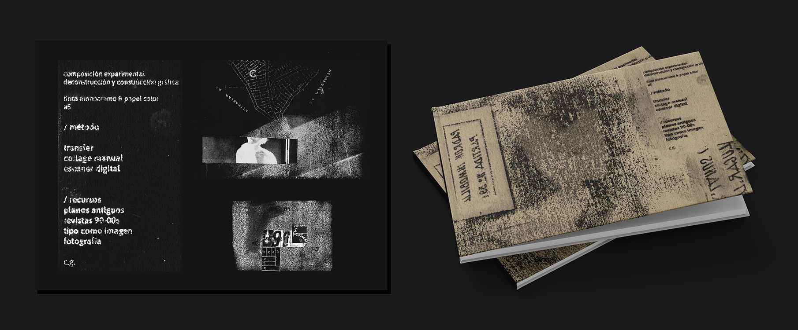

Proyectos editoriales
[Editorial] 2022-2025
Universos analógicos y digitales. Piezas experimentales impresas. Exploración de materialidades. Diseño de portada y maquetación integral.

Universos analógicos y digitales. Piezas experimentales impresas. Exploración de materialidades. Diseño de portada y maquetación integral.